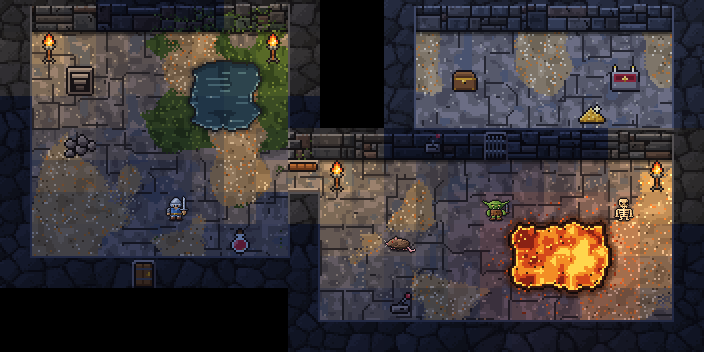
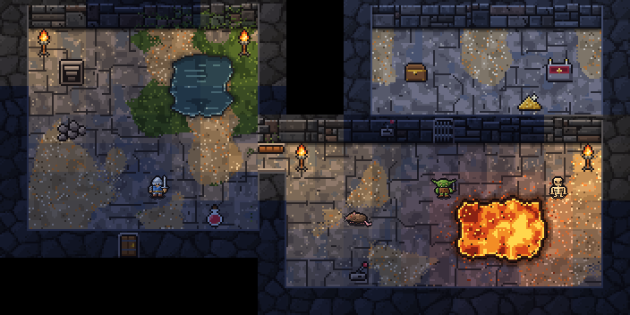
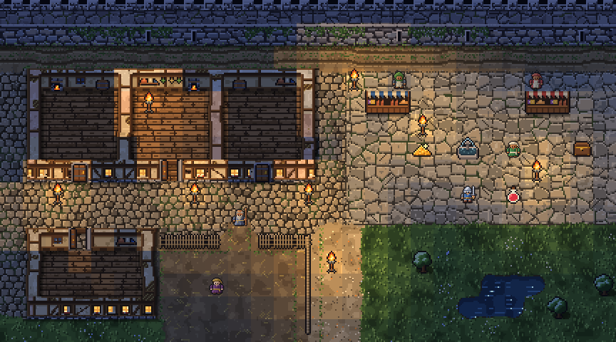
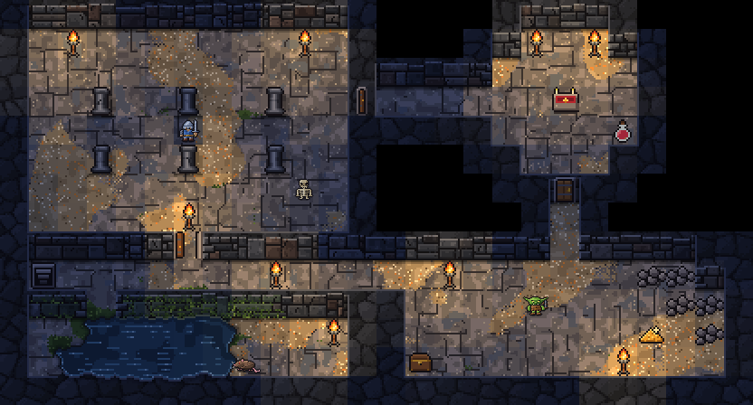
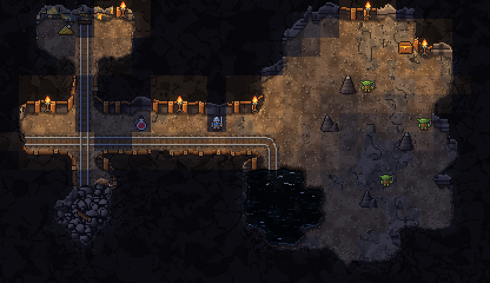
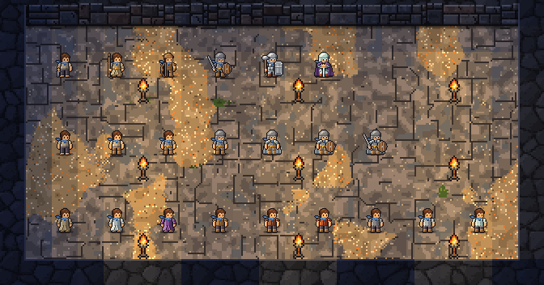

Torchlit, 16×16, with 32×32 figures
Still being tried · 1 version, newest first
Torchlit, 16×16's world exactly as it is, with the people and creatures drawn at 32×32, so a figure has twice the detail of the ground it stands on and the gear it wears can show. The figures are Torchlit, 32×32's. The test room comes twice: with the figures as they are drawn, and with a heavier outline that matches the lines of the world. The last room is the hero in the game's own gear at 32×32, from Torchlit, 16×16's version 2.2. The tiles are shown unlit; the light is laid over the room as a whole.
Version 1 19 October 2026
The first drawing: Torchlit, 16×16's test room, City, Shallows and Mines exactly as they are, with the adventurer, the townsfolk and the creatures drawn at 32×32, so a figure has twice the detail of the ground it stands on. The test room again with the figures outlined more heavily, to match the lines of the world. And the hero in the game's own gear at 32×32, from Torchlit, 16×16's version 2.2.
Feedback hypothetically is it possible to keep the aesthetic of all the environments on the 16x16 tileset and have 32x32 characters? I love the 16x16 biomes/game world, but I need more detail for the characters to reflect items worn by character. … Spin up a new card with art, and put in the 16x16 world with 32x32 characters please, I would like to see how it looks :D
The test room · The test room, the figures with a heavier outline · The City · The Shallows · The Mines · The hero in their gear
The test room
The room every look draws, its stone, earth and light exactly as in Torchlit, 16×16, with the adventurer, the goblin, the skeleton and the giant rat at 32×32.

Tiles
- Floor
- Lit floor
- Stone wall
- Wall face
- Door
- Open door
- Gate door
- Switch
- Water
- Lava
- Rubble
- Altar
- Lever
- Stairs down
- Torch
- Chest
- Gold
- Potion
- Adventurer
- Goblin
- Skeleton
- Giant rat
The test room, the figures with a heavier outline
The same room, every figure ringed with a second line of ink, so its outline is as thick on screen as the cracks and edges of the world around it.

Tiles
- Floor
- Lit floor
- Stone wall
- Wall face
- Door
- Open door
- Gate door
- Switch
- Water
- Lava
- Rubble
- Altar
- Lever
- Stairs down
- Torch
- Chest
- Gold
- Potion
- Adventurer
- Goblin
- Skeleton
- Giant rat
The City
Torchlit, 16×16's City at night, every house, stall and cobble as it is, with the townsfolk, the stall keepers and the adventurer at 32×32.

Tiles
- Cobbles
- Plaza flags
- Yard
- Grass
- Dirt path
- Track
- House floor
- Stone wall
- Wall face
- House wall
- House wall face
- Fence
- Door
- Open door
- Tree
- Water
- Fountain
- Torch
- Townsfolk
- Adventurer
- Potion
- Gold
The Shallows
Torchlit, 16×16's halls of worked stone as they are, with the adventurer, the skeleton, the goblin and the rat at 32×32.

Tiles
- Stone wall
- Wall face
- Wall corner
- Pillar
- Partition
- Stone floor
- Door
- Open door
- Rubble
- Water
- Lava
- Altar
- Stairs down
- Torch
- Chest
- Gold
- Potion
- Adventurer
- Goblin
- Skeleton
- Giant rat
The Mines
Torchlit, 16×16's timbered gallery and cave as they are, with the adventurer, the goblins and the rat at 32×32.

Tiles
- Rough rock
- Rock face
- Stalagmite
- Timbered wall
- Timbered face
- Ore face
- Packed earth
- Rail
- Rail bend
- Rail crossing
- Rubble
- Black pool
- Torch
- Gold
- Chest
- Potion
- Adventurer
- Goblin
- Giant rat
The hero in their gear
From Torchlit, 16×16's version 2.2, shown here again since it is this look's idea: the hero at 32×32 on the 16×16 tiles, dressed in the game's own gear. Top row, six heroes from unarmoured to mithril; middle row, one hero putting gear on piece by piece; bottom row, a robe, a jerkin and a chain shirt each in its three materials. A blue scarf marks the hero.

Tiles
- Unarmoured, a dagger
- Robe and quarterstaff
- Jerkin, cap and shortbow
- Chain shirt, helm, sword and round shield
- Scale hauberk, warhammer and tower shield
- Mithril, a silk cloak and a greatsword
- Put on: nothing yet
- Put on: Leggings and boots
- Put on: Chain shirt and belt
- Put on: Helm
- Put on: Cloak
- Put on: Round shield
- Put on: Longsword
- Robe, rough hemp
- Robe, flaxen linen
- Robe, silk
- Jerkin, rawhide
- Jerkin, fine leather
- Jerkin, drake pelt
- Chain shirt, iron
- Chain shirt, refined steel
- Chain shirt, mithril